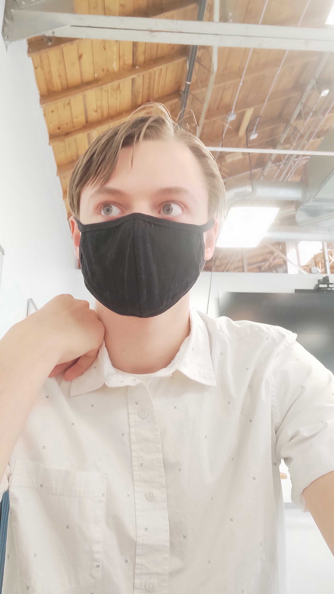

<style>
    main {
        background: #74ebd5;
        /* fallback for old browsers */
        background: -webkit-linear-gradient(to right, #ACB6E5, #74ebd5);
        /* Chrome 10-25, Safari 5.1-6 */
        background: linear-gradient(to right, #ACB6E5, #74ebd5);
        /* W3C, IE 10+/ Edge, Firefox 16+, Chrome 26+, Opera 12+, Safari 7+ */
        color: black;
        text-align: center;
        margin: 0 auto;
    }

    head {
        background: white;
    }

    .box {
        padding: 5px;
        line-height: 1.2;
        border-color: black;
        border-style: solid;
        border-radius: 50px;
        border-width: 10px;
    }

    .borders {
        border-left: solid;
        border-right: solid;
        border-width: 20px;
        border-color: black;
    }

    img {
        height: auto;
        width: 30%;
    }

    #main-head {
        display: grid;
        grid-template-areas:
            "left-circle picture    right-circle"
            "left-circle intro-text right-circle";
        grid-template-columns: 1fr 1fr 1fr;
    }

    .picture {
        border-radius: 50%;
        border-style: solid;
        border-color: black;
        border-width: 10px;
    }

    .left-circle {
        border-radius: 50%;
        border-style: solid;
        border-color: black;
        border-width: 10px;
    }

    .right-circle {
        border-radius: 50%;
        border-style: solid;
        border-color: black;
        border-width: 10px;

    }

    .picture {
        grid-template: picture;
    }

    .left-circle {
        grid-template: left-circle;
    }

    .right-circle {
        grid-template: right-circle;
    }

    .intro-text {
        grid-template: intro-text;
    }
</style>

<main>

    <head>
        <div class="box">
            <h1>Interview with Lance Easley: A Base Camp Coding Academy Student</h1>
            <p>Conducted on 11/19/2020 by Seth Hogue</p>
        </div>
    </head>

    <body class="borders">
        <div id="main-head">
            <div class="left-circle"></div>
            <div>
                
                <h3>First off, what is Base Camp Coding Academy?</h3>
                <p>Base Camp Coding Academy (BCCA) is a hands-on, challenging and fun program, designed to train
                    students to
                    be
                    software developers in 12 months.</p>
                <h3>Now then, let's get into the interview.</h3>
                <p>Hi there! I'm Seth Hogue, and I just got finished interviewing Lance Easley, another student from
                    Base
                    Camp
                    Coding Academy. I asked him a few questions about his time at BCCA, and here is what he had to say
                    about
                    it!
                </p>
            </div>
            <div class="right-circle"></div>
        </div>
        <div class="box">
            <h2>What has been your toughest week at BCCA?</h2>
            <p>"The second Unit project week. My partner and I were stressing to complete our battleship
                project."</p>
            <h2>What has been the easiest week at BCCA?</h2>
            <p>"Probably the first week. I've had some exposure to programming before so that week was just a
                refresher."
            </p>
            <h2>What is your biggest victory so far at BCCA?</h2>
            <p>"The battleship project."</p>
        </div>
    </body>
</main>